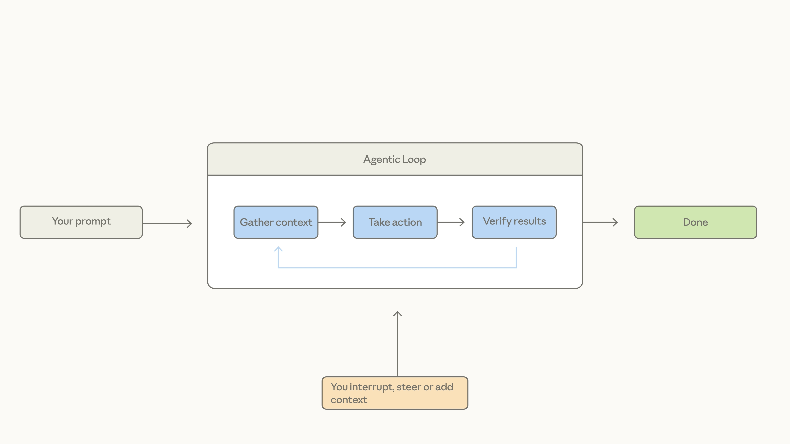
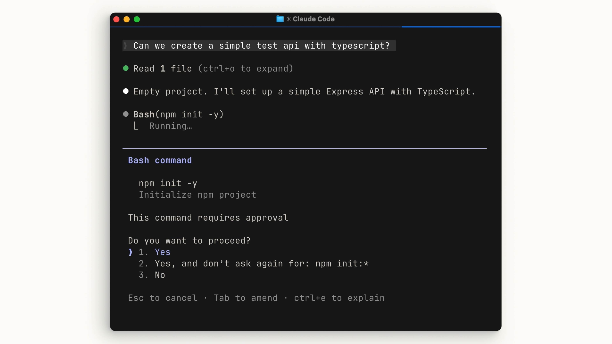

エージェンティックループ
「Claude Code が普通のチャットアプリと違うのは分かった。では、どう動いているのか」。Claude Code はエージェンティックループを通じて最もよく説明できる。以下がその一周。
-
プロンプトを入力する
あなたが Claude Code にやってほしいことを書く。ここがループの入口。
-
コンテキストを集める
プロンプトを完了するのに必要な情報を集める。モデルとやり取りし、モデルはテキストか、Claude Code が実行できるツール呼び出しのどちらかを返す。
-
アクションを実行する
ファイルを編集する、コマンドを実行する、など。返ってきたツール呼び出しを実際に走らせる段階。
-
結果を検証する
その結果が、そもそもプロンプトが意図したことを達成しているかどうかを判断する。自分の作業を自分で検証するのがエージェントの要点。
-
完了、あるいはもう一周
達成していれば Claude は終了し、次のプロンプトを待つ。達成していなければループの頭に戻り、結果が完全で検証可能になるまで再試行する。
そしてこのループ全体を通じて、あなたはコンテキストを追加したり、中断したり、モデルを誘導したりできる。ループは閉じた自動機械ではなく、途中で人が手を入れられる構造になっている。

確認
エージェンティックループの5段階のうち、「ファイルを編集する、コマンドを実行するなど、返ってきたツール呼び出しを実際に走らせる」のはどの段階か。
- アクションを実行する
- コンテキストを集める
- 結果を検証する
答え: A — 「アクションを実行する」段階で、モデルから返ってきたツール呼び出しを実際に走らせる。
「コンテキストを集める」段階はモデルとやり取りしてテキストかツール呼び出しを受け取る段階、「結果を検証する」段階はその実行結果がプロンプトの意図を達成しているか判断する段階で、それぞれ役割が異なる。
コンテキストウィンドウ
Claude にはコンテキストウィンドウがあり、会話・ファイルの内容・コマンドの出力などをどれだけ保存し、振り返って参照できるかを決めている。1本目で「作業メモリ」と呼ばれていたものの正体。
そして上限に達したとき何が起きるかが、この回で新しく足される情報だ。Claude Code は会話を圧縮（compact）する——コンテキストウィンドウから何を取り除けるか、何を要約できるかを自動的に判断し、使用可能なサイズまで戻す。
長い作業ほど、序盤のやり取りは要約に置き換わっていく。だから「さっき言ったこと」が常に原文のまま残っているとは限らない。重要な前提は、会話ではなくファイル（CLAUDE.md など）に置いておくほうが安全になる。
確認
コンテキストウィンドウが上限に達したとき、Claude Code は何を行うか。
- それ以上の会話を一切受け付けなくなる
- ファイルの内容だけを保持し、会話履歴を全削除する
- 何を取り除き何を要約できるかを自動で判断し、圧縮（compact）する
答え: C — 自動的に会話を圧縮（compact）し、使用可能なサイズまで戻す。
その結果、序盤のやり取りは要約に置き換わっていくため、重要な前提はファイルに置くほうが安全になる。
ツール
ツールこそがエージェントの動作の基盤（backbone）となる。対比される普通の AI アシスタントは、テキストを受け取り、テキストを返すだけで、その間に何もない。
ツールを使うことで、Claude Code はタスクの完了に近づくために、いつコードを実行すべきかを判断できる。
— 公式解説 / 01:31
例として挙がるのはファイル読み取りツールと Web 検索ツール。そして Claude Code はセマンティックな理解を用いて、いつツールを呼び出すべきか、そしてその出力をどう使うかを判断する。あらかじめ決まった手順を再生しているのではなく、意味を見て呼ぶかどうかを決めている、ということ。
- Read file
- Search web
- Edit file
- Run command
- …
確認
Claude Code がツールを呼び出すかどうかを判断するしくみとして、本文が説明しているのはどれか。
- セマンティックな理解を用いて、いつ呼ぶべきかを判断している
- あらかじめ決められた手順を順番に再生している
- ユーザーが毎回どのツールを使うか指定している
答え: A — セマンティックな理解を用いて、いつツールを呼び出し、その出力をどう使うかを判断する。
決まった手順の再生ではなく意味を見て判断するからこそ、テキストを返すだけの普通のアシスタントと対比される。
権限モード
Claude Code にはいくつかの権限モードがある。Shift + Tab で切り替えられる。
これらはすべて設定ファイルで構成できる。プロジェクトごとに既定のモードや、許可なしで通してよいコマンドを決めておける。

npm init -y の実行前に「1. Yes / 2. Yes, and don't ask again for: npm init:* / 3. No」。2 を選ぶと、そのコマンドパターンだけが以後スキップされる。権限のスキップには注意。Claude Code にコマンドを自由に実行させることは、問題が発生する前にミスを発見するのがより難しくなることを意味する。速さと引き換えに失うのは、介入できる時間そのもの。
ここまでは動画公開時点の説明。現在の Claude Code は権限モードが6つに増え、自動承認（ACCEPT EDITS）はファイル編集だけでなく mkdir touch rm rmdir mv cp sed といったファイル操作コマンドも自動で通す。通るのは作業ディレクトリ（と additionalDirectories）の内側だけで、.git などの保護パスへの書き込みと、致命的なパスを狙う rm / rmdir は従来どおり止まる。それでも「編集は自動、コマンドは必ず止まる」という線引きは、今はそのまま当てはまらない。以下は動画の内容ではなく、公式ドキュメントに基づく補足（2026年8月時点）。
claude -p や Agent SDK、設定で無効にした場合は手動で始まる--permission-mode dontAsk か設定の defaultMode で指定する。巡回には出ない--dangerously-skip-permissions などで起動した時だけ巡回に加わる。走っているセッションからは入れない.git などの保護パスへの書き込みも通る権限スキップモードでも消えない確認はある——明示的な ask ルール、組織が ask に設定したコネクタツール、AskUserQuestion や承認を要する MCP ツール、rm -rf ~ のような致命的なパスへの削除、そしてセッション間メッセージングの安全弁。逆に、権限スキップが使えるセッションでは、プランモードの「編集させない」という縛りのほうが効かなくなる——計画するようにとは指示されるが、その最中に試みた編集やコマンドは確認なしで走る。
公式ドキュメントいわく、ルールの評価順は deny → ask → allow で、先に一致したものが勝つ。ルールの具体性は順序を変えない。だから deny はすべてのモードで効く——権限スキップモードでも、PreToolUse フックが「許可」を返しても、deny が勝つ。逆に allow は権限スキップ下では意味を持たない。触らせたくないものは、モードではなく deny で止めるのが確実——これは 10 フック の「お願いではなく、保証」と同じ考え方。
確認
動画時点の3モードのうち、ファイル編集は確認なしで実行するがコマンド実行は毎回たずねるのはどれか。
- 編集は確認なしで進み、コマンドの実行だけは都度確認される設定
- 編集もコマンド実行も、その都度確認を求められる設定
- 編集は行わず、読み取り専用ツールだけで計画をまとめる設定
答え: A — 自動承認はファイル編集を確認なしで実行し、コマンド実行はたずねる。
手動はどちらも毎回たずね、プランモードはそもそもファイル編集をせず読み取り専用ツールしか使わない。
まとめ
Claude Code は、エージェンティックループ・管理されたコンテキストウィンドウ・ツール・設定可能な権限という複数のエージェント的な概念を、すべてターミナル内で組み合わせている。
そして締めの一文が、1本目の「チャットとの違い」に答えを返している——コードベースを読み取り、アクションを実行し、自らの作業を検証できる。それこそがチャットウィンドウとは根本的に異なる点だ。
次の 03 最初のプロンプト では、ここで出てきた権限モードとプランモードを、実際に手を動かす側から見ていく。
原文トランスクリプト（英語・全文）
YouTube の自動生成字幕から取得したもの。contacts（正しくは context）など、音声認識の誤りがそのまま残っている箇所がある。
We know that Claude code is different from usual chat applications, but how does it work? Claude code is best explained through the agentic loop. You enter a prompt into Claude code. Claude code will then gather contacts
required to complete your prompt. It does so by interacting with the model which will return text or a tool call that Claude code can execute. Then it takes action. For example, editing a file or running a
command. Finally, it verifies those results and determines if they achieve what your prompt set out to do in the first place. If they do, then Claude finishes and waits for the next prompt. And if they don't, Claude goes back and
runs the loop again until the results are complete and verifiable. Throughout this loop, you're able to add contacts, interrupt it, or steer the model to help guide it towards your end goal. Claude has a context window, which
determines how much of your conversation, file contents, command outputs, and more it can store and look back on. Once you reach that limit, Claude code compacts your conversation, which automatically determines what it
can take out of the context window and what it can summarize in order to bring the context window back down. Tools are the backbone of how agents work. Currently, most AI assistants are simply
input text and output text. Nothing in between. Tools let Claude code and other agents determine when to execute code to get closer to a task. This could be read file tool or search web tool, for
example. Claude code uses semantic searching to determine when to call a tool and get the output of it. Claude code also has permission modes. Default behavior is that it has to ask explicit permission before editing a
file or running a shell command. You can use shift and tab to toggle between different modes. Auto accept edits files without asking, but still ask for commands. Plan mode uses read-only tools to help
compile a plan of action before starting. It's worth being cautious when skipping permissions. Giving Claude code free reign to run commands means a mistake could be harder to catch before even happens.
Claude code works by combining different agentic concepts, an agentic loop, a managed context window, tools, and configurable permissions into your terminal. It can read your code base, take action, and verify its own work,
and that makes it fundamentally different from a chat window.